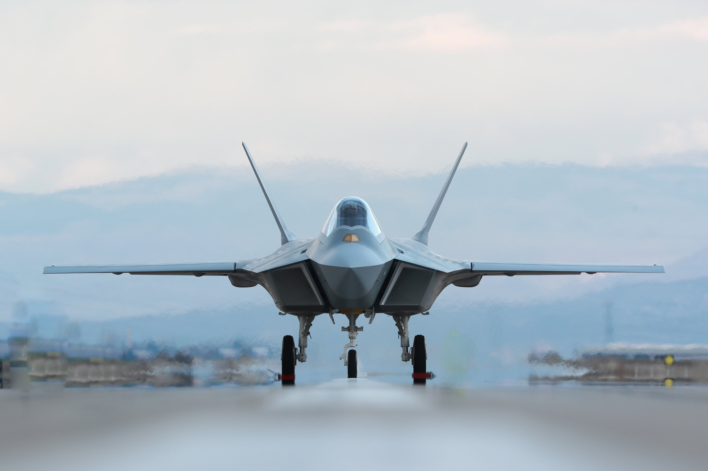

EVOLUSI JET TEMPUR ✈️ (Gen 4.5 & 5)
JET TEMPUR GENERASI KE-5
F-35 Lightning II 🇺🇸

Multi-role Stealth
Negara Asal: Amerika Serikat
Jet tempur multifungsi dengan kemampuan siluman tingkat tinggi...
- Kategori: Multi-role Fighter
F-35 Lightning II Detail & Spesifikasi
F-35 adalah program jet tempur bersama terbesar yang dirancang untuk menggantikan banyak pesawat serang dan tempur generasi sebelumnya. Fokusnya adalah kemampuan siluman, sensor terintegrasi, dan dukungan multi-misi.Spesifikasi (F-35A):
- **Mesin:** 1 × Pratt & Whitney F135 (dengan afterburner)
- **Kecepatan Maks:** Mach 1.6+ (sekitar 1.930 km/jam)
- **Persenjataan:** Meriam internal **GAU-22/A 25 mm** (F-35A), Rudal (AIM-120 AMRAAM, AIM-9X, dll.) di ruang senjata internal.
F-22 Raptor 🦅

Air Superiority Stealth
Negara Asal: Amerika Serikat
Jet tempur superioritas udara generasi ke-5 yang tak tertandingi...
- Kategori: Air Superiority Fighter
Lockheed Martin F-22 Raptor Detail & Spesifikasi
F-22 Raptor adalah pesawat tempur taktis siluman segala cuaca kursi tunggal bermesin ganda dari Amerika Serikat. Ia didesain untuk mengemban peran utama sebagai pesawat tempur superioritas udara.Spesifikasi:
- **Mesin:** 2 × Pratt & Whitney F119-PW-100 (dengan thrust vectoring)
- **Kecepatan Maks:** Mach 2.25+ (sekitar 2.410 km/jam), **Supercruise** Mach 1.82
- **Persenjataan:** Meriam internal **M61A2 Vulcan 20 mm**, Rudal (AIM-9 Sidewinder, AIM-120 AMRAAM) di ruang senjata internal.
J-20 Mighty Dragon 🇨🇳

Heavy Stealth Fighter
Negara Asal: Tiongkok
Jet tempur siluman kelas berat Tiongkok, fokus pada serangan jarak jauh...
- Kategori: Air Dominance/Interceptor
Chengdu J-20 Detail & Spesifikasi
Chengdu J-20 adalah jet tempur siluman kursi tunggal bermesin ganda. Desainnya yang panjang menunjukkan fokus pada kecepatan dan jangkauan, ideal untuk misi serangan presisi dan pencegatan jarak jauh.Spesifikasi:
- **Mesin:** 2 × Shenyang WS-10C / Chengdu WS-15 (estimasi)
- **Kecepatan Maks:** Mach 2.0+ (sekitar 2.450 km/jam)
- **Persenjataan:** Rudal Jarak Jauh (PL-15), Rudal Jarak Dekat (PL-10) di ruang senjata internal.
Su-57 Felon 🇷🇺

Maneuverable Stealth
Negara Asal: Rusia
Jet tempur siluman Rusia yang berfokus pada kemampuan super-manuver...
- Kategori: Multi-role Fighter
Sukhoi Su-57 Felon Detail & Spesifikasi
Sukhoi Su-57 (sebelumnya T-50) adalah jet tempur superioritas dan serangan bermesin ganda yang dikembangkan oleh Rusia. Unggul dalam **super-maneuverability** berkat sistem **thrust vectoring**-nya.Spesifikasi:
- **Mesin:** 2 × Saturn AL-41F1 (Tahap 1) / Izdeliye 30 (Tahap 2 - dengan thrust vectoring)
- **Kecepatan Maks:** Mach 2.0+ (sekitar 2.130 km/jam), **Supercruise** Mach 1.3
- **Persenjataan:** Meriam internal **GSh-30-1 30 mm**, Rudal R-77M, R-74M2 di ruang senjata internal.
TAI TF KAAN 🇹🇷 (Prototype)
National Fighter (on dev)
Negara Asal: Turki
Jet tempur generasi ke-5 pertama buatan Turki. Diharapkan beroperasi penuh di masa depan...
- Kategori: Multi-role Fighter Prototype
TAI TF KAAN Detail & Spesifikasi (Target)
TAI TF Kaan adalah proyek jet tempur Turki untuk menggantikan F-16 Falcon. Kaan merupakan jet tempur generasi kelima dengan fitur siluman dan avionik canggih buatan dalam negeri.Spesifikasi (Target Produksi):
- **Mesin:** 2 × General Electric F110 (Prototipe) / Mesin domestik (Produksi)
- **Kecepatan Maks:** Mach 1.8+ (sekitar 2.210 km/jam)
- **Persenjataan:** Meriam internal (belum diumumkan), Rudal (GÖKDOĞAN, BOZDOĞAN, dll.) di ruang senjata internal.
JET TEMPUR GENERASI 4.5
Eurofighter Typhoon 🇬🇧

Canard-Delta Superiority
Negara Asal: Eropa (Konsorsium)
Jet tempur superioritas udara, lincah dan mampu **Supercruise**...
- Kategori: Multi-role Fighter
Eurofighter Typhoon Detail & Spesifikasi
Dikembangkan oleh Inggris, Jerman, Italia, dan Spanyol. Unggul dalam kecepatan dan manuver dengan radar AESA canggih.Spesifikasi:
- **Mesin:** 2 × Eurojet EJ200 (dengan afterburner)
- **Kecepatan Maks:** Mach 2.0+ (sekitar 2.495 km/jam)
- **Persenjataan:** Meriam internal **Mauser BK-27 27 mm**, Rudal (Meteor, IRIS-T) di 13 cantelan.
Dassault Rafale 🇫🇷

Omni-role Versatility
Negara Asal: Prancis
Jet tempur sejati *omni-role*, mampu melakukan segala misi secara simultan...
- Kategori: Omni-role Fighter
Dassault Rafale Detail & Spesifikasi
Rafale dikembangkan dan diproduksi sepenuhnya oleh Prancis. Julukan *omni-role* berarti ia dapat beralih peran dengan cepat. Dikenal karena sistem peperangan elektroniknya yang kuat, SPECTRA.Spesifikasi:
- **Mesin:** 2 × Snecma M88 (dengan afterburner)
- **Kecepatan Maks:** Mach 1.8 (sekitar 1.912 km/jam)
- **Persenjataan:** Meriam internal **GIAT 30 M791 30 mm**, Rudal (MICA, Meteor, SCALP cruise missile) di 14 cantelan.